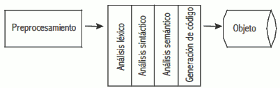
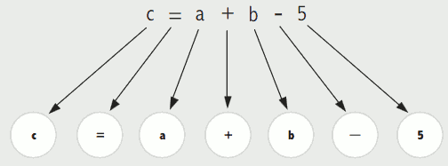

Para ver nuestro programa en ejecución, debemos aplicar unos procesos intermedios mediante los cuales nuestro programa cambia de un estado a otro hasta que obtenemos una versión ejecutable. Este concepto se conoce como Build.
Proceso de compilación
La obtención de un programa ejecutable se lleva a cabo mediante dos programas: el compilador y el enlazador (linker). Aunque difiere dependiendo de la tecnología o plataforma de programación que usemos. Aun así, la compilación se compone internamente de varias etapas:
- Análisis léxico: se lee secuencialmente todo el código fuente agrupándolo en unidades significativas de caracteres (tokens). Son secuencias de caracteres que tienen significado (int, =, void, …). Todos los espacios en blanco, lineas en blanco, comentarios, etc, se eliminan del programa fuente.
 - Analizador sintáctico: recibe el código fuente en forma de tokens (componentes léxicos) y se agrupan jerárquicamente en frases gramaticales que el compilador utiliza para sintetizar la salida. Se comprueba si lo obtenido de la fase anterior es sintácticamente correcto (obedece a la gramática del lenguaje). Por lo general, las frases gramaticales del programa fuente se representan mediante un árbol de análisis sintáctico. El proceso es semejante al análisis gramatical de una frase en lenguaje natural.

- Analizador semántico: se comprueban que las declaraciones son correctas, se verifican los tipos de todas las expresiones, si las operaciones se pueden realizar sobre esos tipos, si los arrays tienen el tamaño adecuado, etc. Esta información se añade al árbol de análisis sintáctico.
- Generación del código intermedio: tras el análisis semántico el compilador genera un código intermedio. Está entre el lenguaje de alto nivel y el lenguaje de máquina. Este código intermedio debe ser generado de tal manera que hace que sea más fácil de traducir en la máquina de destino.
- Optimización de código: puede ser asumida como algo que elimina código innecesario, y organiza la secuencia de declaraciones con el fin de acelerar la ejecución del programa sin desperdicio de recursos (CPU, memoria).
En los lenguajes compilados completamente a codigo máquina, la fase de enlazado (linker) une todos los códigos objetos resultados de la compilación de todos los ficheros fuentes que forman parte de un programa. También se une el código de los métodos de las librerías usadas. Todos estos códigos objetos se traducen a código máquina creando un programa ejecutable (p.e. un fichero .exe).
El proceso de compilación y enlazado permite crear archivos ejecutables.
Herramientas
Las herramientas utilizadas para convertir código fuent en código ejecutable son:
Compilador
Un compilador es una herramienta que traduce el código fuente de un lenguaje de programación, C, C++ o Java, a un formato optimizado y ejecutable en una máquina concreta.
Enlazador (Linker)
Un enlazador es un programa que toma los objetos generados en los primeros pasos del proceso de compilación, la información de todos los recursos necesarios (biblioteca), quita aquellos recursos que no necesita, y enlaza el código objeto con su(s) biblioteca(s) con lo que finalmente produce un fichero ejecutable o una biblioteca. En el caso de los programas enlazados dinámicamente, el enlace entre el programa ejecutable y las bibliotecas se realiza en tiempo de carga o ejecución del programa.
Intérpetes
Existen lenguajes de programación que no crear archivos ejecutables. Para poder ejecutar estos archivos se necesita un Intérprete, que es un programa informático que procesa el código fuente de un proyecto de software durante su tiempo de ejecución, es decir, mientras el software se está ejecutando, y actúa como una interfaz entre ese proyecto y el procesador. Un intérprete siempre procesa el código línea por línea, de modo que lee, analiza y prepara cada secuencia de forma consecutiva para el procesador. Para procesar el código fuente del software, el intérprete recurre a sus propias bibliotecas internas: en cuanto una línea de código fuente se ha traducido a los correspondientes comandos legibles por máquina, esta se envía directamente al procesador.
El proceso de conversión no finaliza hasta que se ha interpretado todo el código. Solo se interrumpe prematuramente si se produce un fallo durante el procesamiento, lo que simplifica mucho la resolución de los errores, ya que la línea de código problemática se detecta inmediatamente después de ocurrir el fallo.
Los lenguajes que utilizan un intérprete para ser ejecutados se deniminan lenguajes interpretados y los que utilizan un compilador se denominan lenguajes compilados. Existen lenguajes que permiten las dos soluciones. De esta manera, durante el proceso de escritura y detección de errores utilizan el intérprete para ejecutarse y cuando ya se ha escrito y probado, utilizan un compilador para obtener el archivo ejecutable.